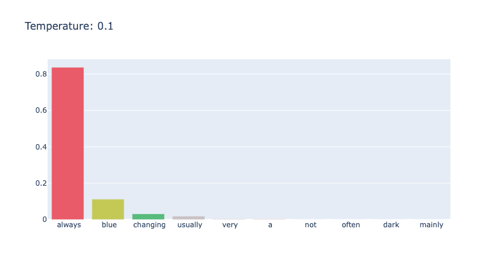
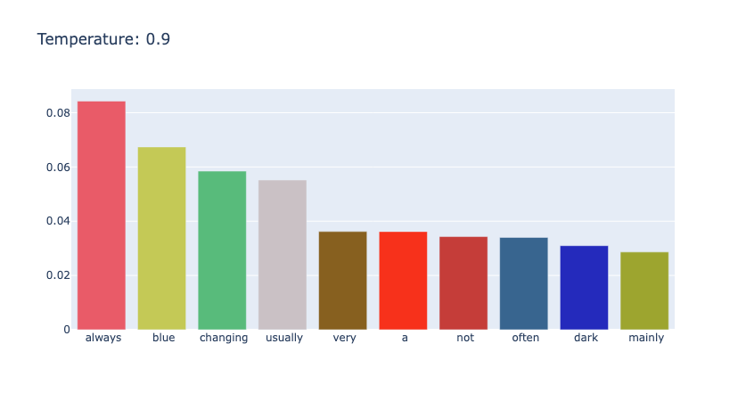
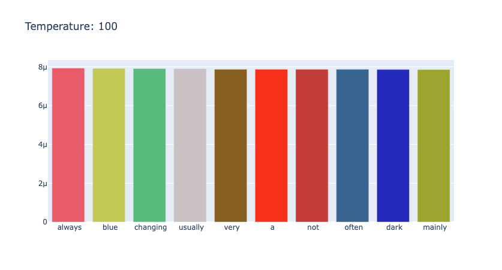
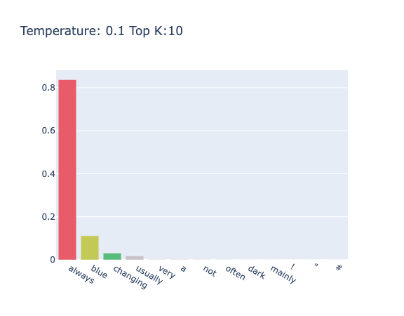
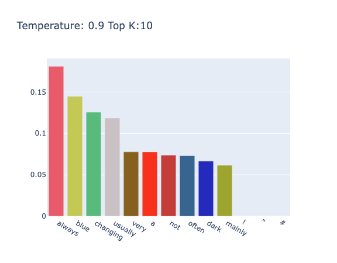
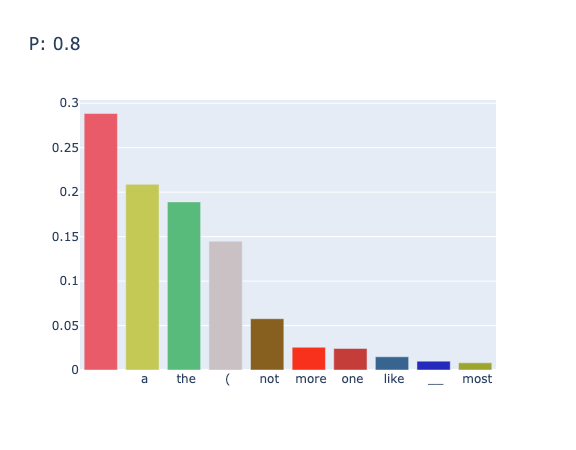
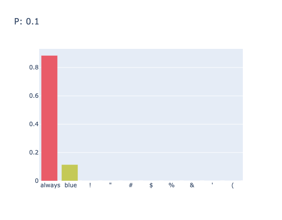

Three Sampling Methods: Temperature, Top K and Top P
Feb. 27, 2025 · Qiyao Wang · Topic #Decoding
Temperature Sampling
通过调整 temperature 能够改变选择某些 token 的概率分布，放大或减少其中的采样的随机性。一般其取值范围在 [0, +∞] 之间，当温度接近 1 时，保留原始的采样分布；当温度接近 0 时，会逐渐变成单峰分布，即与 Greedy Search 类似；而当温度越大，如 $>1$，极端情况趋于 ∞ 时，采样分布会逐渐趋于均匀分布。
对于序列 $\mathbf(x)=(x_1,x_2,...,x_m)$，利用温度参数 $T$ 进行放缩 $\frac{x_i}{T}$，之后进行 Softmax 计算
$$ p(x_i)=\frac{e^{\frac{x_i}{T}}}{\sum_j e^{\frac{x_j}{T}}} $$修改基类 Sampler 中函数
def get_next_token_prob_logits(self, input_ids:torch.Tensor):
# 禁止计算图中梯度的计算
with torch.no_grad():
logits = self.model(input_ids=input_ids).logits
# 在此之前，logits 形状为 torch.Size([1, 1, 151936])
# 获得 Tensor 的最后一维度 torch.Size([151936])
logits = logits[0, -1, :]
probs = torch.softmax(logits, dim=-1)
return probs, logits
Temperature的相关代码和事例
class RandomTempSampler(Sampler):
def __call__(self, prompt, max_new_tokens=10, temp: float=0.5):
predictions = []
result = prompt
# generate until max_len
for i in range(max_new_tokens):
input_ids = self.encode(result)
next_token_logits = self.get_next_token_prob_logits(input_ids)[1]
next_token_logits /= temp
probs = torch.softmax(next_token_logits, dim=-1)
# 根据概率分布随机采样
ids = torch.multinomial(probs, num_samples=1).item()
result += self.decode(ids)
predictions.append(probs[ids].item)
return result
def sample_plot(self, prompt, temp: float=0.5):
input_ids = self.encode(prompt)
nex_token_probs = self.get_next_token_prob_logits(input_ids)[1]
nex_token_probs /= temp
probs = torch.softmax(nex_token_probs, dim=-1)
self.plot_scores(probs, title=f"Temperature: {temp}", k=10)
对于 "the color of sky is" 进行不同温度的采样，如下面三幅图所示，可以看到，随着 temperature 的变大，分布逐渐均匀。



Top K Sampling
Top K 采样在每一次选择 next token 时，只确保最有可能的 $K$ 个 token 能够被选择。当 $k=1$ 时，退化为 Greedy Search；当 $k=|V|$ 时，退化为纯采样。Top K 和 Temperature 可以结合使用，调整 Top K 中的随机性。
K 的确定需要特别注意。K 较小时可能会导致文本多样性下降，K 大时会导致包含不合适的词的候选。
class TOPKSampler(Sampler):
def __call__(self, prompt, max_new_tokens=10, top_k=1, temp: float=0.5):
predictions = []
result = prompt
# generate until max_len
for i in range(max_new_tokens):
input_ids = self.encode(result)
nex_token_logits = self.get_next_token_prob_logits(input_ids)[1]
nex_token_logits = nex_token_logits / temp
# 类似于 mask，将概率小的logits 换成 -inf
indices_to_remove = nex_token_logits < torch.topk(nex_token_logits,top_k)[0][...,-1, None]
new_logits = torch.clone(nex_token_logits)
new_logits[indices_to_remove] = float('-inf')
probs = torch.softmax(new_logits, dim=-1)
ids = torch.multinomial(probs, num_samples=1).item()
result += self.decode(ids)
predictions.append(probs[ids].item)
return result
def sample_plot(self, prompt,top_k=5, temp: float=0.5):
input_ids = self.encode(prompt)
next_token_logtis = self.get_next_token_prob_logits(input_ids)[1]
next_token_logtis = next_token_logtis / temp
indices_to_remove = next_token_logtis < torch.topk(next_token_logtis,top_k)[0][...,-1, None]
new_logits = torch.clone(next_token_logtis)
new_logits[indices_to_remove] = float('-inf')
probs = torch.softmax(new_logits, dim=-1)
self.plot_scores(probs, title=f"Temperature: {temp} Top K:{top_k}", k= top_k + int(math.sqrt(top_k)))
对于 "the color of sky is" 进行带有温度的 TopK 采样，其中 $K=10,T=0.5$ 时的结果为 "The color of sky is blue. If you want to make the sky appear blue, you can use a certain amount of blue paint. If you want to make the sky appear yellow,"。
调整不同的温度，如图4和图5所示


Top P Sampling
Top P Sampling 又称为核采样，其与 Top K Sampling 类似，通过对可选择的词集进行某种限制，来选择最小的词集。Top P Sampling 通过限制最小词集中所有词的概率和小于 $p$ 来实现动态调整候选词。
class NucleusSampler(Sampler):
def __call__(self, prompt, max_new_tokens=10, p: float=0.7):
predictions = []
result = prompt
# generate until max_len
for i in range(max_new_tokens):
input_ids = self.encode(result)
next_token_logits = self.get_next_token_prob_logits(input_ids)[1]
sorted_logits, sorted_indices = torch.sort(next_token_logits, descending=True)
cumulative_probs = torch.cumsum(torch.softmax(sorted_logits, dim=-1), dim=-1)
sorted_indices_to_remove = cumulative_probs > p
# 这句话需要斟酌
sorted_indices_to_remove[..., 1:] = sorted_indices_to_remove[..., :-1].clone()
sorted_indices_to_remove[..., 0] = 0
indices_to_remove = sorted_indices[sorted_indices_to_remove]
new_logits = torch.clone(next_token_logits)
new_logits[indices_to_remove] = float('-inf')
scores = torch.softmax(new_logits, dim=-1)
ids = torch.multinomial(scores, num_samples=1).item()
result += self.decode(ids)
predictions.append(scores[ids].item)
return result
def sample_plot(self, prompt,p: float=0.7):
input_ids = self.encode(prompt)
next_token_logits = self.get_next_token_prob_logits(input_ids)[1]
sorted_logits, sorted_indices = torch.sort(next_token_logits, descending=True)
cumulative_probs = torch.cumsum(torch.softmax(sorted_logits, dim=-1), dim=-1)
sorted_indices_to_remove = cumulative_probs > p
sorted_indices_to_remove[..., 1:] = sorted_indices_to_remove[..., :-1].clone()
sorted_indices_to_remove[..., 0] = 0
indices_to_remove = sorted_indices[sorted_indices_to_remove]
new_logits = torch.clone(sorted_logits)
new_logits[indices_to_remove] = float('-inf')
probs = torch.softmax(new_logits, dim=-1)
self.plot_scores(probs, title=f"P: {p}", k=10)
对于 "the color of sky is" 在 $p=0.8$ 时的输出结果为 "The color of sky is blue. This belongs to\nA. The subject of cognition\nB. The"
其中在不同的 $p$ 值下的采样情况如图6和图7所示


Reference
Contact
There may be some errors present. If you find any, please feel free to contact me at wangqiyao25@mails.ucas.ac.cn. I would appreciate it!